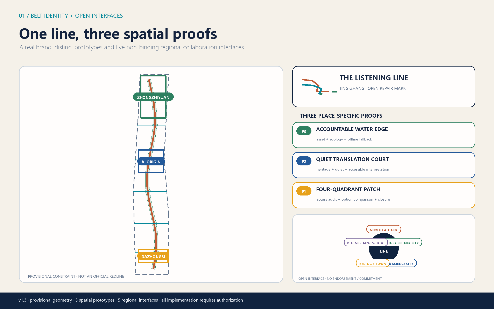
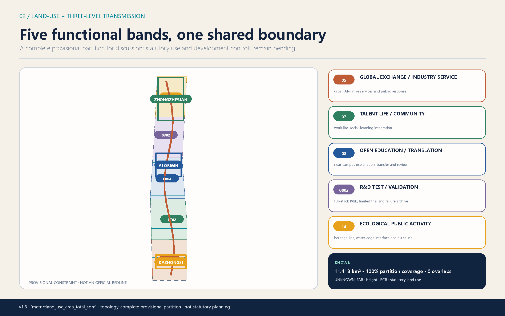
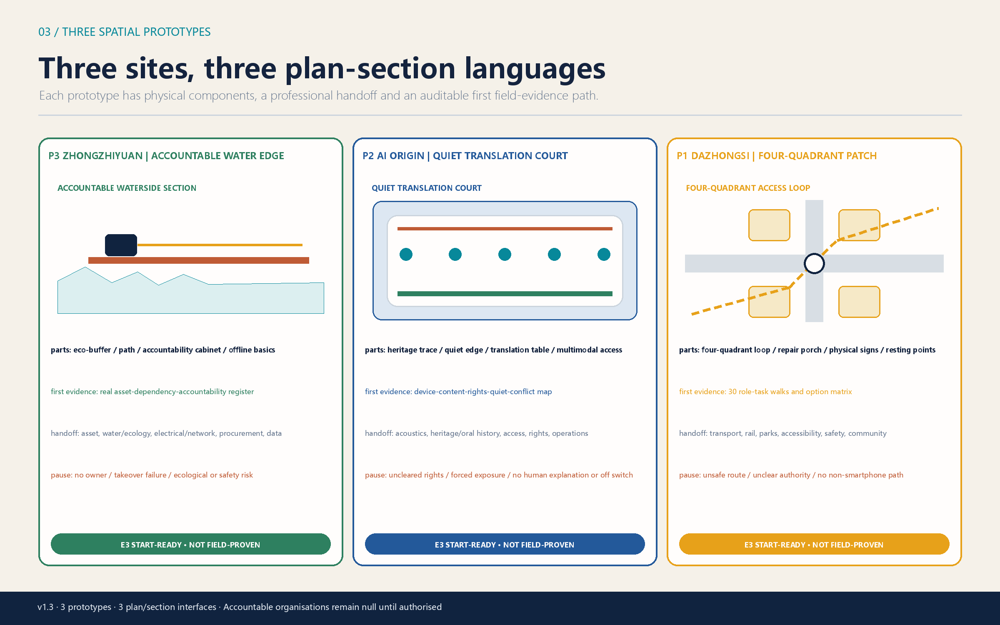
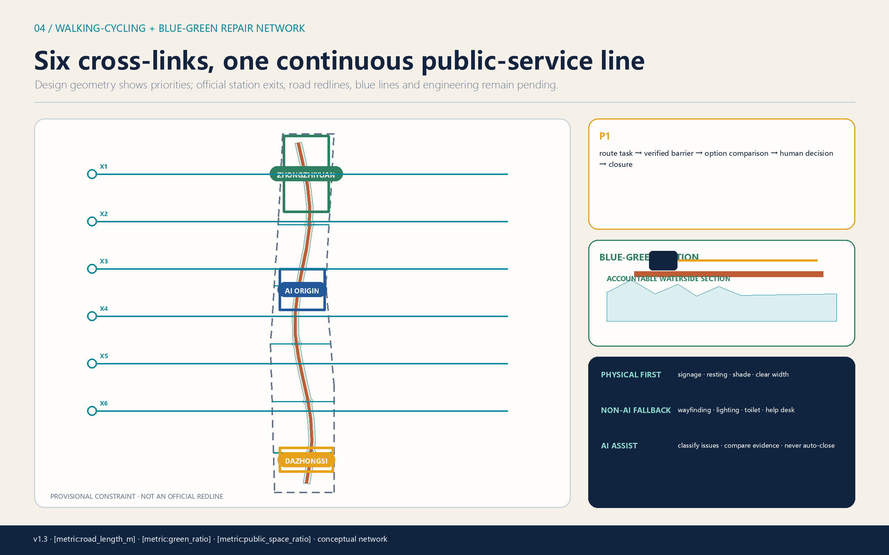
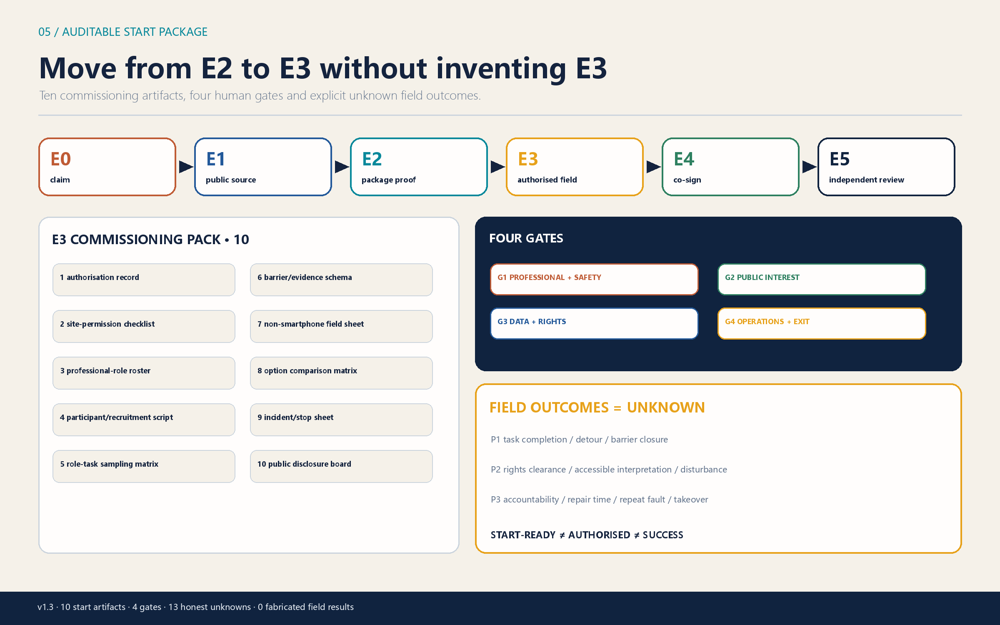

Accountable Waterside Test Gallery
ecological buffer · walking band · accountability cabinet · offline basics
real asset-dependency-accountability registerVersion 1.3 makes the first review surface spatial: a real identity, a correct land-use map, three different prototypes, a walking-blue-green network and an honest E3 commissioning pack.





ecological buffer · walking band · accountability cabinet · offline basics
real asset-dependency-accountability registerheritage trace · quiet edge · shared table · multimodal interpretation
device-content-rights register and quiet-conflict maproutes · repair porch · physical wayfinding · staffed window
30 role-task walks, barrier register and option comparisonopen_interface_no_commitment
Official polygons, planning controls, station exits, ownership, blue lines, building survey and municipal capacity remain missing. Regional interfaces are not agreements. Prototype dimensions and E3 field evidence require professional confirmation and authorisation.
G1 professional/safety · G2 public interest · G3 data/rights · G4 operations/exit
performance_results=null
Official notice and cleared Agent Taskbook define the task. Repository provisional geometry supports intake visualization only; local official/public pages anchor Line 13 access, Qinghuayuan heritage and waterfront maintenance questions.
23 / 23 mandatory requirements · 15 / 15 design-depth items · 6 Agent tasks · 12 scenarios · 4 testing scenarios · 6 personas · 4 landmarks.
Deterministic checks are rerun before PR upload.